Life Quotes — Inspiring the Happy, Good and Fun in Life..
| Inspirational Vibes |
Motivational Vibes |
Positive Vibes |
Here are the best good vibes quotes that will feed you with positive thoughts which will also inspire you.
"Keep these qoutes to pull up and scroll through whenever you need a little pick up"
Get motivated and start scrolling..
1. When life puts you into tough situations, do not say why me? Instead, you should say, try me?
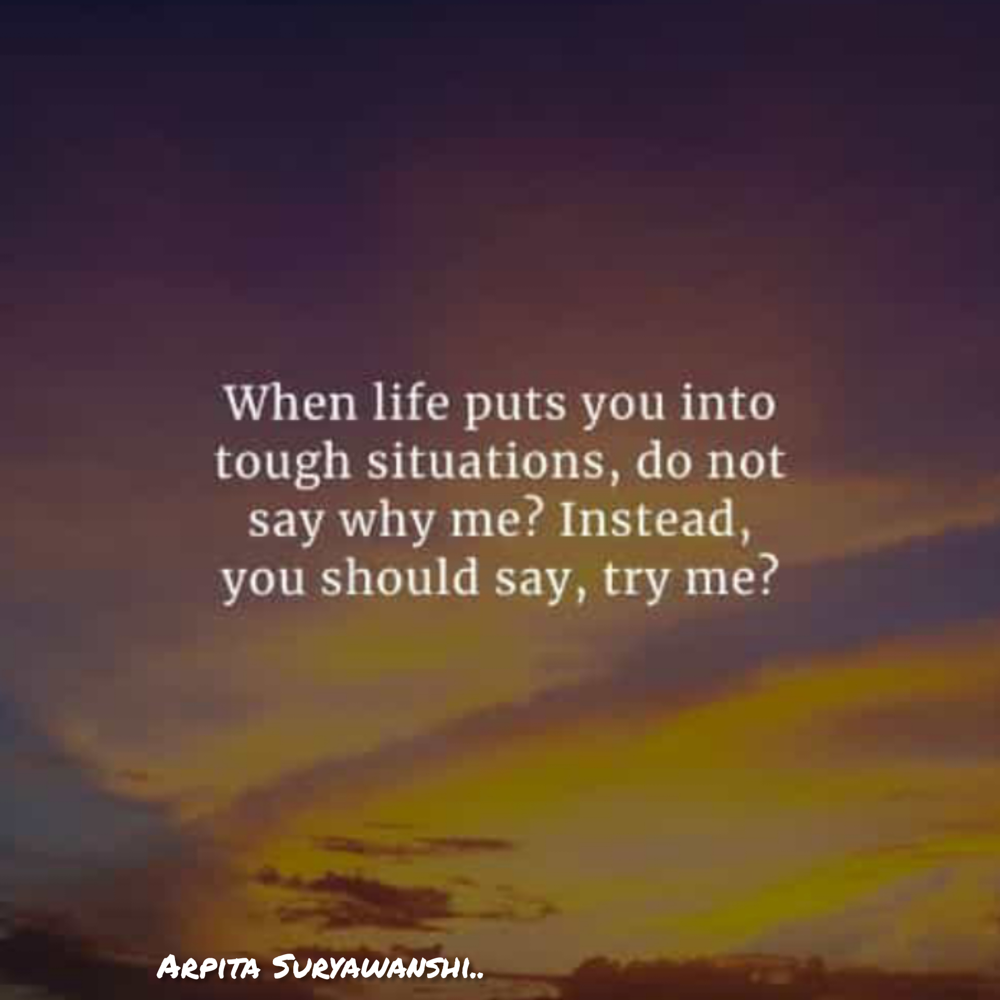
2.You attract the energy that you give off.Spread good vibes. Think positively. Enjoy life.
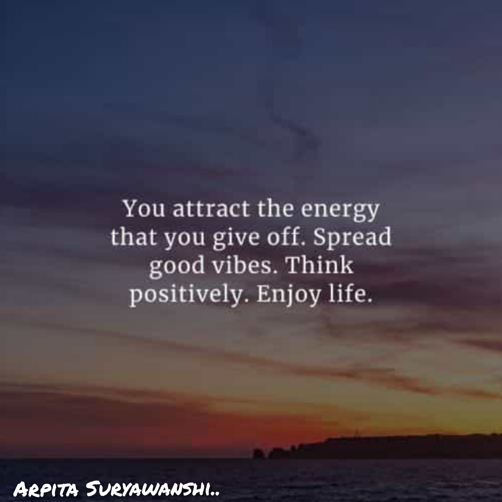
3.Walk away from anything that gives you bad vibes. There is no need to explain or make sense of it. It's your life. Do what makes you happy.
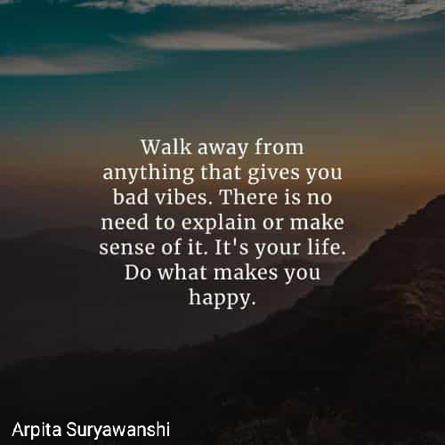
4.I love people who are open-minded. People who just vibe with whatever you talk about. You can talk about anything and everything.
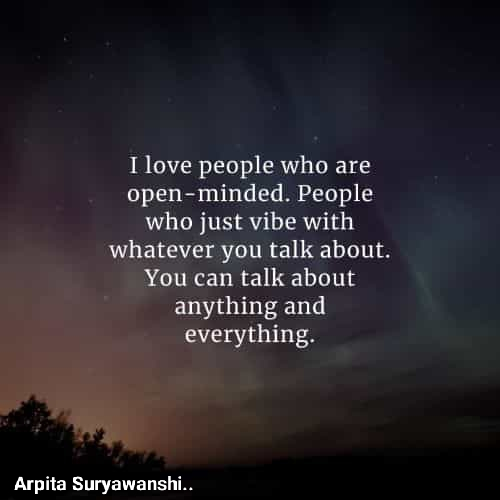
5.Trust the vibes you get, energy doesn't lie.
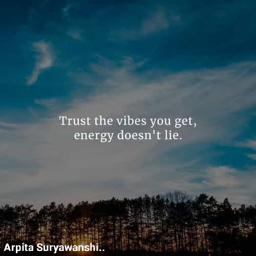
6.Don't think too much, just do what makes you happy
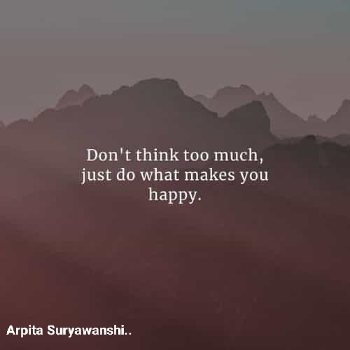
7.Don't stress. Do your best. Forget the rest.
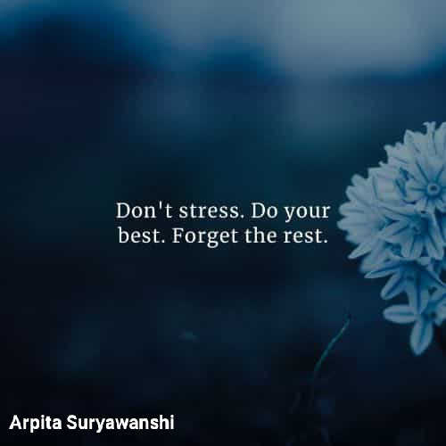
8.Always surround yourself with positive souls and good vibes will just come naturally. Remember that your surroundings will influence your experience so make it a positive one.
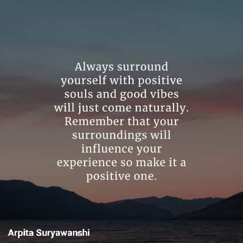
9. We are all a little broken. But the last time I checked, broken crayons still color the same
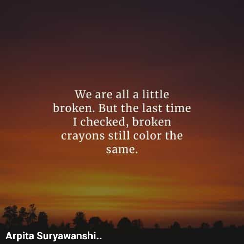
10.A good friend knows all your best stories. A best friend has lived them with you.
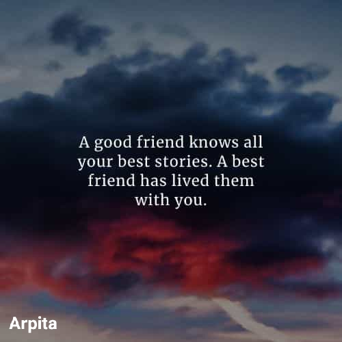
11.Whatever is good for your soul, do that.
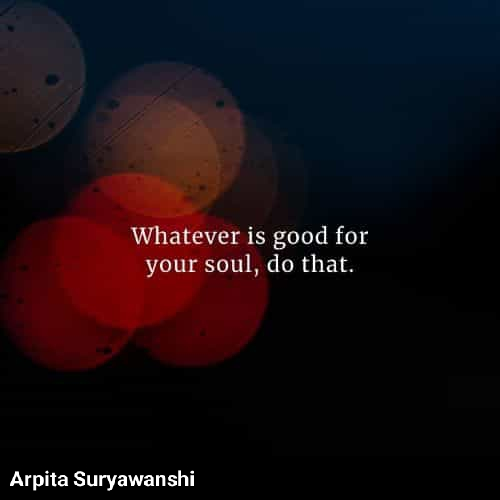
12.Tomorrow is always fresh, with no mistakes in it yet.
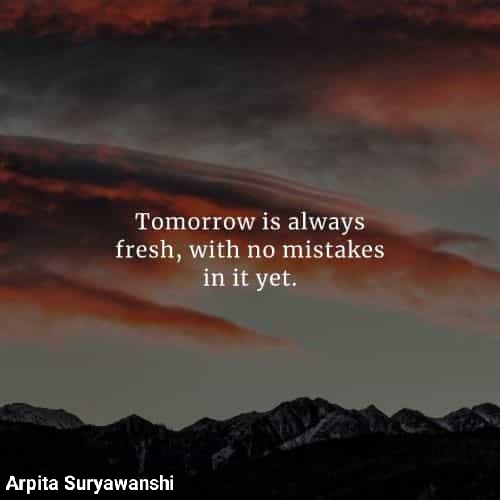
13.In hale good vibes and exhale the bad ones. Worrying will not take the troubles away. It will just take away the peace of today.
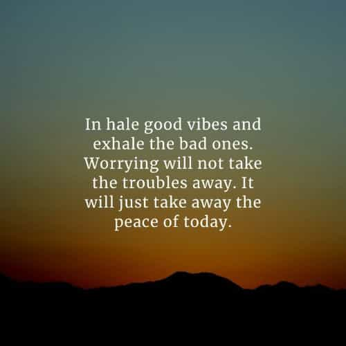
14.Learn to love yourself. It is important that you stay positive all the times because beauty comes from the inside
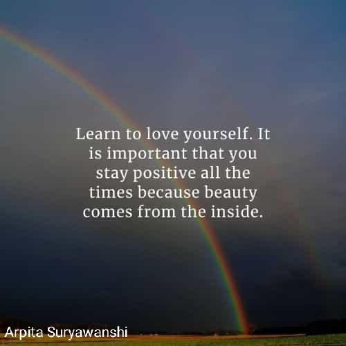